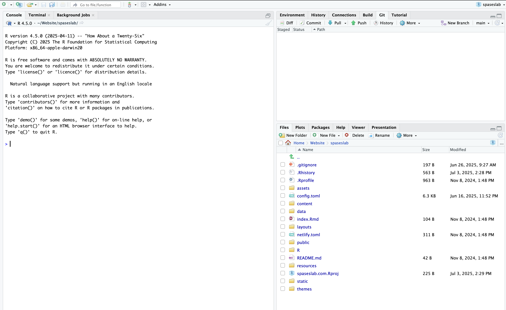

Introducing Git and Quarto
Objectives
- Successfully clone a repository into your RStudio Session
- Edit a Quarto document, save the changes, and commit them to git
- Render a Quarto document into a final html page
Gitting started
Cloning a repository to RStudio
Each assignment in Github Classroom creates a repository for you in your Github account. To work on it; however, you’ll have to get it into Rstudio. I’ll show you how to do that now.
Start by creating a new project. Click on the little cube in the top right of RStudio, it should give you a dropdown that looks like this:
Click on the New project button it should bring up a window that looks like:

Click on the version control option which will bring up
Select the Git option which will open:
Now go back to the assignment page in GitHub and click the Code dropdown button (green in the topright)
Copy the link that appears under the HTTPS option and pasted it in the repository URL in the RStudio Git interface.
Now you should be able to click “Create Project” and clone the assignment into your RStudio server session. If you were successful, your RStudio screen should look something like this:

You’ll see a “Git” tab in the same pane as your “Environment” pane, you’ll see all of the files and folders associated with the webpage in the “Files” pane, you’ll see the project name in the top right corner next to the R box, and you see the branch you’re working on in the “Git” tab of your environment pane.
Now that you’ve successfully linked RStudio to the repository (and pulled all of the current files). It’s time to start working on a document!
Getting to know Quarto
Within your project folder, you should see a /docs folder with a file called inclass02.qmd. Open that by clicking on it.This should automatically open the file in a “Source” pane above the “Console” pane.
Quarto document structure
All Quarto documents start with a yaml header that provides a number of formatting options for Pandoc (the program that translates Markdown into the final format). This is the section of the document enclosed in the --- fence. You can find a description of options you can include in the Quarto documentation.
For this example, I want you to add your Name and Affilation to the document by including it in the yaml header. Based on the onling help, we can do that like this:
Committing your changes
Once you’ve made the change, save your document. When you do that you’ll notice that the file now shows up in the git tab of your environment pane:
This area is called the “Staging” area. It shows files that have been modified since you’re last commit and allows you to commit those changes to the version history in git, ignore the changes and stop tracking the file, or revert back to a previous version of the file. The “M” next to the file means the file has been modified and has changes to commit. The “?” next to the other file names means that the file is not currently tracked (meaning that it is the first version of the file and needs to be commited before it will be tracked.)
As noted by the “M”, we’ve made a change to the file that should be tracked in our version history. That means we need to commit it to the version history. To do that, click the box next to the assignment name and press the commit button. This will open a separate windoe called the “dif” (i.e. the differences between the previous version and the one you are committing) window. You’ll see the additions to the file highlighted in green and any subtractions highlighted in red.
In the top-right corner, you’ll see a box for the “Commit message”. Each commit should have a short message that will remind you what you did in the step that you are committing. In this case, you changed the author information so let’s use that for our commit message. Type “change author” in the commit message window and press the “Commit” button. Once you do, you should see a window that looks like this:
When you close the dif viewer, you’ll see that your git tab in the Environment pane has a note that you are 1 commit ahead of the remote repository, meaning that you have local changes that haven’t been included in the online version of your assignment.
Editing text in Quarto
The next part of the example asks you to write some text and add color and formatting. There are a couple ways to do this in Quarto.
You’ll notice at the top of the “Source” pane that Quarto has two options for editing, one called “Source” and one called “Visual”. Quarto, like Rmarkdown, relies on the Markdown language for rendering text. Markdown is a simple plain-text language for formatting text, including images, and generating attractive documents that can be rendered to html, pdf (via pandoc), and even docx files. The “Source” editor allows you to write directly with Markdown while the “Visual” editor resembles a more traditional word-processing program with buttons for formatting text that automatically generate the appropriate markdown syntax. For simple tasks, the “Visual” editor works pretty well, but for more complex documents (with equations or lots of code) the “Source” editor is the way to go.
Use the Markdown formatting guide or the Visual editor to make the necessary formatting changes.
Adding Code Chunks
The real power of Quarto is its ability to include both code, results, and text all together. This happens through the use of code “chunks”. You can insert a code chunk by typing ``` or by clicking “Insert” -> “Code Block” in the Visual Editor.
After the 3 backticks, you’ll see text in brackets. The first bit (r) tells Quarto what language the code is in (Quarto can handle a lot of different syntax), the second (testchunk) is the name of this piece of code. Adding names allows you to navigate more easily through the document and identify which parts of the code might be breaking if/when you get error messages. On the next line you see several things that start with #| these are options for how you want the code to be rendered in the final document. Setting echo: true tells Quarto to print the code (not just the result) and eval: false tells Quarto not to actually run the code. You can find more about code chunk options here.
Rendering your document
Assuming you’ve made it to the end of the example and committed all of your changes, it’s time to render the document to convert the markdown into the final form (in this case html). To do this, simply push the blue arrow button at the top of the source pane.
You should now see an html file with the same name as your original file in the docs folder.
Pushing your changes to the remote
In order to fully take advantage of version control with Rstudio, we need to keep our online repository up-to-date with our local changes. We do that using the the github workflow:
“Pull” the most recent version (you did this at the beginning of the lesson) - this ensures that any changes that have been made since the last time you were working on the files are updated.
Make changes and “commit” them (you’ve done this throughout the exercise) - this ensures that you can “go back in time” if you need to undo changes assuming that you’ve left yourself helpful reminders for what each commit was.
3 “Push” those commits back up to the remote version. Assuming you’ve followed all of the instructions in the exercise you should have 4 (or more) commits that are beyond the online version of the repository. In order to get your local changes back to the remote, you need to “push” them. You can do that by pushing the green “up” arrow in the git pane.
Assuming everything went smoothly, you’ll see something like this:
You can then go to the repository page in GitHub.
You’ll see the last commit message at the top. On the right, you see a little clock with a reverse arrow. This is the “commit history”. If you click that, you’ll see all of the commits that you made so far. This lets you verify that all of your changes are now accessible from the remote.

Final Thoughts
There’s lots more to say about using Quarto and navigating the git workflow. You can check out more information on git here including common errors and how to fix them. We’ll continue to build this throughout the semester, but for now I just wanted you to be able to make it through a simple workflow from start to finish and give you enough to finish your self reflection!